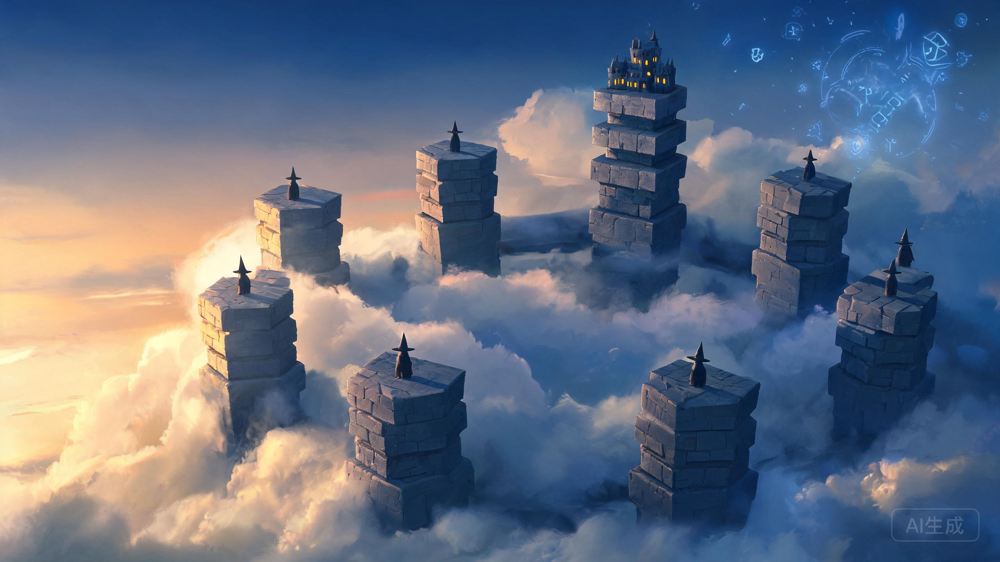
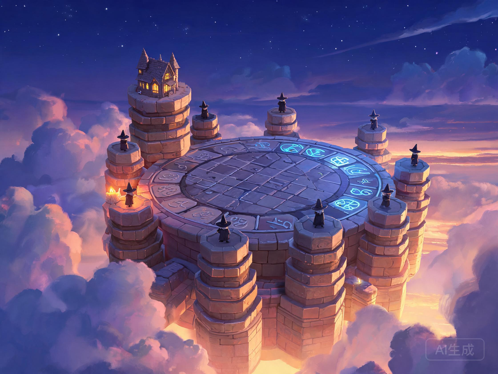
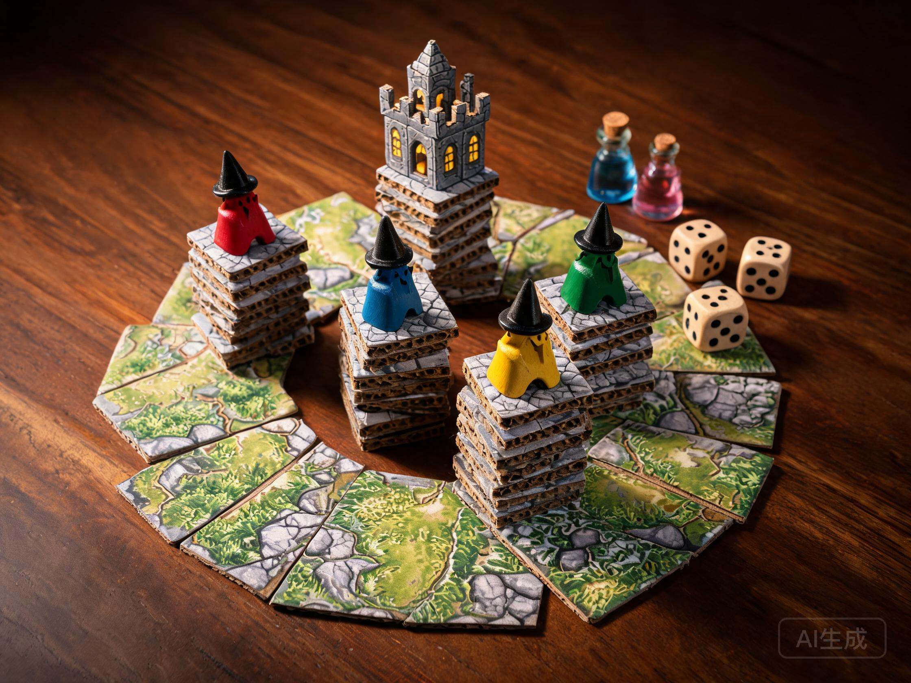
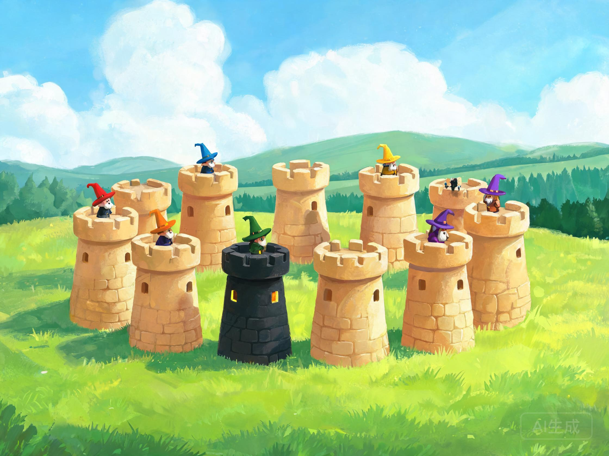
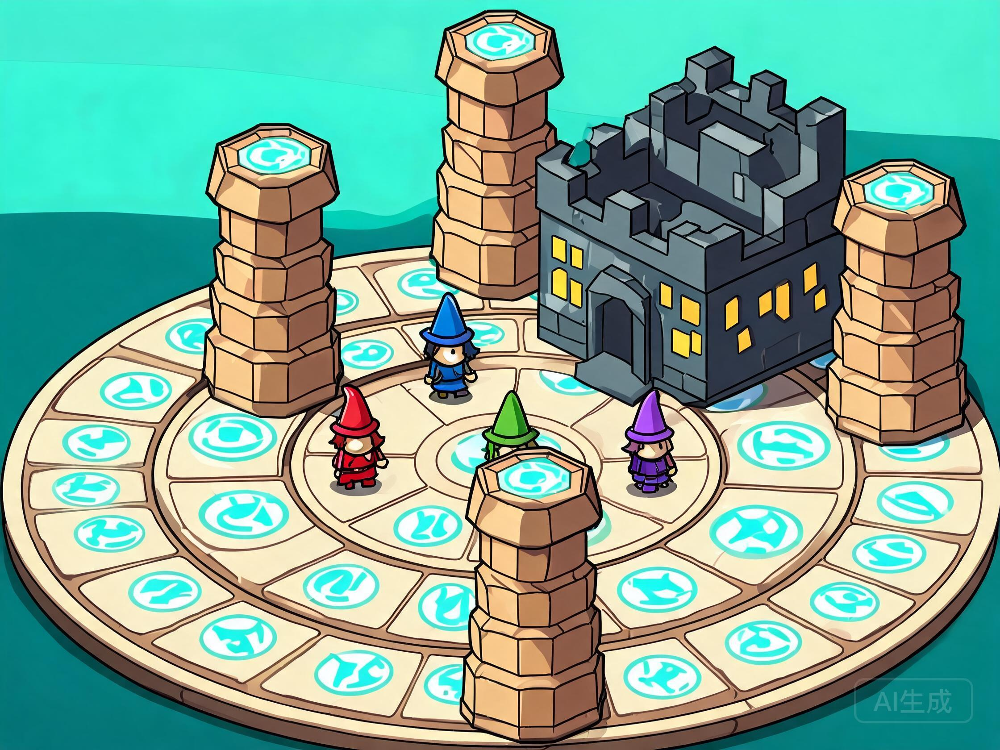

现状体检：现役视觉体系
现役项目是 React + Vite + CSS 3D Transforms 的真 3D 舞台（980px 世界 / 58° 斜俯 / perspective 1200），几何语汇高度统一：八边矮胖叠塔、十六边地块、尖帽巫师米宝、鸦堡、渡鸦蓝圆徽。整体风格浓缩为四个字：暗石 + 暖烛 + 蓝符 + 金选——暗石板舞台、暖烛主光、蓝符文点缀、金色选中辉光，三态语义色固定（金 #e8b339 / 绿 #27ae60 / 蓝 #7fb3ff）。
做得好的地方
- 几何语汇统一：全部体块共用「顶面 clip-path + N 片侧墙」棱柱语言，八边/十六边贯穿全场，没有第二套造型出现。
- 光照逻辑自洽：58° 固定斜俯、暖烛主光（左下）+ 冷蓝补光（右上）单一光位，层间提亮只作用于叶子面，深色侧面不发死。
- 语义色清晰：金/绿/蓝三态状态环 + 六玩家色，选中、可选、纹章一眼可辨，交互信息不被美术淹没。
- 手绘感细节克制：烛焰摇曳、金窗闪烁、星屑漂浮、升腾魔力环——动效点缀都在低频小面积范围内。
问题清单
| 问题 | 表现 | 影响 | 优先级 |
|---|---|---|---|
| 0 张真实贴图 | 全部材质为程序化 CSS 渐变，石砖缝、纸纤维、木纹都是「画出来的线」 | 近看材质偏平、偏「塑料渐变」，缺少颗粒与笔触；与原作手绘质感落差最大处 | 高 |
| 冷灰占比过重 | 石材主体是 #3b3f4a / #565c68 一系冷灰，暖色只在点缀层 | 画面温度低、亲和力弱；与原作 Menzel 暖大地色基调（土黄/草绿/赭石）相反 | 高 |
| 层次依赖文字 | 地块与塔身同属一套灰石材，远看 16 格环轨与塔群糊成一片 | 棋盘空间层次（轨道/塔/底座）需要额外辨认成本 | 中 |
| 明度低 → 玩家色弱 | 暗底 + 降饱和处理下，六玩家色的辨识主要靠帽尖 | 多人同屏时阵营归属感不够快 | 中 |
| 背景与主体同色系 | E04 云雾夜空与石材同为蓝灰，纵深靠雾不靠色 | 主体轮廓与背景分离度一般，截图传播时冲击力弱 | 低 |
核心诊断：现役体系「骨」很硬——几何、视角、语义、动效都成立；弱在「皮」——材质没有颗粒、色彩没有温度。因此本次提案全部限定为贴图 / 色彩 / 光效层面的改动，58° 视角、全部尺寸（visual3d.ts）、点击语义与三态色含义一律不动。
原作风格锚点：桌游《The Wandering Towers》
先修正三件事实：设计师是 Wolfgang Kramer & Michael Kiesling；出版方为 ABACUSSPIELE（德）/ Capstone（英）；全游戏插画由 Michael Menzel（《Legends of Andor》御用画师）一人完成[1][3]——这是「单一画师统一手绘」基调，不是拼贴式多画师风格。
其视觉配方可以压缩成三条硬特征：
- 明亮高键、低威胁感：蓝天白云 + 群山草地，奇幻但诙谐童趣，不是黑暗史诗[2]；
- 暖大地色 + 软圆笔触：土黄、草绿、赭石打底，高饱和色只做点缀；笔触柔和无硬边，介于写实油画与卡通之间[3]；
- 单一深色锚点：渡鸦堡（Rabenburg）是全桌唯一黑色件，在明亮版图里充当视觉锚[4]。
风格落差（如实指出）：原作是明亮童趣的手绘日光，现役项目是暗黑烛光夜色。两者不必强行统一——世界观（魔法学校毕业班夜赴鸦堡）撑得起夜色；但原作的暖色温、材质颗粒、造型符号三条可以「注入」而不推翻现有底色。这正是方案 B/D 的设计思路，方案 A 则是全面回归原作。
四版风格方案：同一几何，只换皮
四个方向按「与现役距离」从近到远排列：B 金蓝黄昏（渐进暖化）→ C 实体桌游（材质语汇）→ A 暖昼手绘（回归原作）→ D 三段卡通（风格突围）。下方每个预览都是同一份几何、同一台 58° 相机，只有色彩与贴图层不同——这正是「不动 3D 视角、只改样式」的直观演示。
基线 · 现役「暗烛光」
金蓝黄昏 · 渐进暖化（推荐主线）

核心配色
关键 --va-* 变量映射（改 visual-assets.css 顶部即可全局生效）
| 变量 | 现值 | 建议值 | 说明 |
|---|---|---|---|
| --va-stone 系 | #3b3f4a / #565c68 | #6d5f4c / #8a7a62 | 冷灰 → 暖棕灰，最关键一步 |
| --va-light-warm | rgba(246,160,44,.28) | rgba(246,160,44,.42) | 暖主光加强 |
| --va-light-blue | rgba(127,179,255,.18) | rgba(127,179,255,.12) | 冷补光收敛，避免灰感 |
| --va-gold | #e8b339 | #f0b84a | 更亮的烛金 |
| --va-blue | #7fb3ff | #8fc0ff | 符文微调，语义不变 |
| --va-wine | #7a2436 | #6a2c3e | 鸦堡顶暖移 |
| --va-stage | #1a1d24 | #2c2440 | 舞台偏暮紫，与暖石拉开冷暖 |
| --va-warm / --va-paper-ink | #d9c9a3 / #f5e9c8 | #e6cf9e / #f7ead0 | 羊皮纸微暖 |
材质与纹理配方
砖缝对比降低、缝色改暖黑（rgba(28,18,10)），凿痕层加一层暖黄细纹；所有暗缝从冷黑 #0c0e14 换成暖黑 #1c120a，塑料感即消一半。
光效与氛围
E04 背景由「云雾夜空」改「暮色云海」：顶 #241f38 → 地平 #a06850 的暖渐变 + 疏星；金窗光晕半径 +30%；选中金辉光脉冲的第二层半径加大。三态语义色只调亮度不换色相。
优势
- 改动面最小：主要是色值级调整，几何与发光语义全部保留
- 直接命中「冷灰塑料感」两大问题，暖冷对比更戏剧化
- 与夜色世界观兼容，不需要重写背景主题
代价
- 与原作明昼仍有距离（可用世界观辩护）
- 深金在部分 UI 面板上需要重测对比度
实体桌游 · 微缩实物感

核心配色
材质与纹理配方
关键句法是「瓦楞横纹 + 印刷平涂」：塔侧墙用 2px 间隔的细横纹表现纸板断面，塔面用高对比砖缝表现印刷图案；真实贴图阶段优先换 ambientCG/Poly Haven 的 diffuse（见 04 章）。
光效与氛围
背景改深胡桃木纹 + 四角 vignette；照明收束为单一暖台灯顶光（暖主光半径加大、冷补光几乎关闭），接触阴影加深变实，整体像「相机俯拍一桌刚摆好的桌游」。
优势
- 「桌游数字化」叙事最强，与原作纸模塔/木米宝组件直接呼应
- Demeo 同路线市场验证充分，实体材质自带亲切感
- 贴图资源（纸板/木纹/印刷石）在 CC0 库里最丰富
代价
- 背景（木桌）与现有 E04 三主题差异最大，需要新做一套
- 纯 CSS 瓦楞是近似，想真有质感建议配真实 diffuse 贴图
暖昼手绘 · Menzel 忠实向

核心配色
关键 --va-* 变量映射
| 变量 | 现值 | 建议值 | 说明 |
|---|---|---|---|
| --va-stage | #1a1d24 | #cfe6f5 | 夜空 → 日光天，最大的一次反转 |
| --va-stone 系 | #3b3f4a / #565c68 | #c9a97a / #e2c795 | 灰石 → 暖砂岩 |
| --va-blue | #7fb3ff | #2e6fb8 | 浅底上必须加深才可读 |
| --va-gold | #e8b339 | #d99a24 | 同理加深 |
| --va-paper-ink | #f5e9c8 | #4a3a28 | 浅色界面上文字反转为深墨 |
| --va-wine | #7a2436 | #a03c3c | 点缀色提亮 |
材质与光效
砖缝/凿痕对比整体调低并转暖（模拟软笔触）；阴影从冷黑转暖灰紫；金窗、烛焰等发光元素在亮底上改为「深底光斑」表达。E04 可直接改造现有 sky 主题（视差云层已具备），成本比想象低。
优势
- 与原作还原度最高，白天场景辨识度与传播力最好
- 亮底让六玩家色辨识速度最快，家庭向气质强
- 现有 sky 背景主题可直接改造
代价
- 现役暗烛光资产大面积重调：发光语义（金辉/蓝符光）在浅底上都要重做
- 「夜赴鸦堡」世界观氛围被削弱，需要叙事侧配合
三段卡通 · Toon 风格化

核心配色
材质与纹理配方
CSS 实现 toon 分段只需把连续渐变换成「硬停渐变」（色标位置重合），再用最外一档压暗模拟描边；纹理层全部去掉细碎噪点，只保留大色块。
光效与氛围
背景改 2–3 段平涂天空 + 扁平云形；发光（金窗/符文）改纯色块 + 一圈实色光晕，不用渐变辉光；阴影改硬边椭圆色块。
优势
- 风格差异化最强，一眼与其他桌游数字版区分
- 形状/剪影可读性最好，缩略图与手机小屏友好
- 渐变更少、渲染更轻，性能最友好
代价
- 与 Menzel 手绘感背离最大，原作党可能不认
- 现有材质渐变几乎全换，描边语汇需要全局统一设计
四版速览
| 方案 | 一句话 | 改动面 | 原作还原 | 适合场景 |
|---|---|---|---|---|
| B 金蓝黄昏 | 冷灰暖移，夜色变黄昏 | 小（色值级） | 中 | 想立刻变好看、保住现有资产 |
| C 实体桌游 | 纸模塔 + 木米宝实物感 | 中（纹理层） | 中高 | 想强调「正经桌游」质感 |
| A 暖昼手绘 | 回归原作明亮日光 | 大（含背景/语义重校） | 最高 | 面向家庭向 / 还原党 |
| D 三段卡通 | 平涂 toon 风格化 | 大（材质语汇重写） | 低 | 想要独立风格辨识度 |
three.js 生态借鉴清单
先澄清一个事实：现役渲染是 CSS 3D Transforms，仓库内并没引入 three.js；唯一的 three.js 文件是美术参考台 美术UI设计/WizardTower_Stage_Reference_FIXED.html（three@0.166.1，用于直观预览体块比例）。「three.js 渲染效果好」的观感正来自这个参考文件。下面把 three.js 生态的渲染配方翻译成 CSS 3D 可落地的手法；未来若整体迁移 three.js，这套参数可原样搬用。
渲染配方对照表
| three.js 技术 | 视觉效果 | CSS 3D 落地手法 | 参考参数 |
|---|---|---|---|
| MeshToonMaterial + gradientMap | 硬边分段明暗（卡通着色）[5] | 硬停 linear-gradient（3–4 档色标重合） | 3 档：亮 0.22 / 中 0 / 暗 0.18 透明度 |
| UnrealBloomPass | 发光溢出、烛火/魔法辉光[6] | 叶子面多层 box-shadow 光晕 | strength≈0.3 → 0 8px 16px 三层递减 |
| ACESFilmicToneMapping | 高光柔和滚降、微压饱和的电影感 | 舞台上层叠半透明渐变罩 + 叶子面降饱和 | 罩层透明度 4–8%，饱和 -6% |
| RoomEnvironment + PMREM | 环境反射，消除「塑料感」 | 叶子面加一条环境高光渐变（斜向亮带） | 高光带透明度 15–25% |
| Fog / FogExp2 | 微缩景深、远景沉入空气 | E04 背景径向渐变 + 远景层降对比 | density≈0.012 → 远景对比 < 主体 60% |
| PCFSoftShadowMap | 柔和接触阴影 | 多层模糊 box-shadow / 径向渐变影盘 | 影盘模糊半径 ≈ 物体宽 25% |
| 暖 Directional + 冷 Hemisphere | 暖主冷补的立体光位 | 现有 --va-light-warm / --va-light-blue 双径向叠加 | warm 0.35–0.45 / cool 0.12–0.18 |
免费贴图资源（CC0，可商用）
项目当前 0 张位图；CSS 渐变可覆盖 80% 观感，但要「真贴图颗粒」时按下面顺序取材最省事。CSS 3D 里把 diffuse 贴图直接作 background-image 平铺即可（法线/粗糙度贴图用不上，2.5D 场景 diffuse + pattern 已足够）。
| 资源库 | 推荐条目 | 用途 |
|---|---|---|
| ambientCG[9] | Tiles130 / Bricks097 / Planks037A / Paper006 | 石板地面、砖墙、木桌面、羊皮纸卡面（1K–4K PBR 全套） |
| Poly Haven[10] | cobblestone_01 / brick_pavement / wood 分类 | 8K 照扫古石板、泥缝石路、138 款木纹可挑 |
| Kenney[11] | Board Game Icons（250+）/ Prototype Textures | 卡牌 UI 图标、平铺原型纹理 |
| Poly Pizza / Quaternius[12] | Ultimate Fantasy RTS / Fantasy Props MegaKit | low-poly 塔楼/城堡/龙模型（glTF），未来迁移 three.js 直接用 |
开源与商业风格参考
| 参考 | 类型 | 可借鉴点 |
|---|---|---|
| three.js examples[6] | 官方示例 | webgl_materials_toon / webgl_postprocessing_unreal_bloom(_selective) / webgl_tonemapping / webgl_shadowmap_pcss —— 全部可抄参数 |
| mbrinkl/santorini[13] | GitHub 开源 | boardgame.io + three.js 桌游架构，棋子/棋盘的 stylized 材质 |
| Demeo[7] | 商业游戏 | 「实体桌游材质 UI」路线：卡牌/木牌/标签而非虚幻风（方案 C 的直接依据） |
| For The King[8] | 商业游戏 | 低面暴露棱面 + 平涂纯色 + 硬边分段（方案 D 的直接依据） |
| Dorfromantik / Stacklands / Wingspan 数字版 | 商业游戏 | 低饱和粉彩 / 平面卡牌插画 / 暖手绘棋子 + 纸板桌面，各取一招 |
推荐与落地路径
推荐结论：以 B 金蓝黄昏 为主线（色值级改动、低风险、直击「冷灰塑料感」），叠加 C 的两招材质语汇（塔侧墙瓦楞牛皮边、地块印刷描边）增加实体桌游质感；若面向家庭向宣传则选 A，若要风格辨识度则选 D。B 与 D 可以混搭：黄昏底色 + 硬停高光档。
分阶段落地（全部只动样式层）
色彩暖移
只改 visual-assets.css 的 --va-* 变量与各渐变色标（石系暖移、暖光加强、冷光收敛），全局立竿见影。
材质纹理化
砖缝/凿痕/瓦楞/纸纹的 CSS 层重排；可选引入 CC0 diffuse 贴图替换程序化渐变。
光效精修
辉光分层（bloom 式三层 box-shadow）、影盘加深、E04 背景按所选主题改造。
UI 统一校准
F02 面板/按钮随主题换色，三态语义色做对比度复测，六玩家色在新底色上校明度。
红线约束（落地时不可违反）
- 58° 相机、全部几何与尺寸（visual3d.ts）、点击语义、信息可见性一律不动；本提案只动「皮」。
- 三态语义色含义不变（金=目标 / 绿=可选 / 蓝=纹章），只允许微调明度/饱和并复测对比度。
- preserve-3d 容器禁 filter / opacity<1 / clip-path / overflow:hidden（会强制 flatten、侧墙塌陷）；提亮降饱和只施加叶子面。
- 核心资产禁 emoji、纯色矩形、镜面/塑料/霓虹；纹章仍只用渡鸦蓝圆徽一种。
- 双平台约束：不升级依赖、不动 pnpm-lock.yaml；样式层改动零依赖风险。
改动落点（确定风格后才动手）
| 文件 | 负责内容 | 改动类型 |
|---|---|---|
| packages/client/src/styles/visual-assets.css | 全部 --va-* 材质变量与 .va-* 材质类（本案主战场） | 色值 / 渐变层 / 纹理层 |
| packages/client/src/components/StageBackground.tsx | E04 背景三主题（cosmic / sky / dark）的 Canvas 绘制色 | 色值 / 主题改造 |
| packages/client/src/styles/phase-u.css | F01 玩家色发光外框、全局 chrome | 色值微调 |
| packages/client/src/game/config.ts | 六玩家色值（仅当新底色上辨识度不足时校明度） | 可选 |
| docs/visual-assets/README.md | 素材库规格文档（风格口径需同步更新） | 文档 |
| 美术UI设计/WizardTower_Stage_Reference_FIXED.html | three.js 视觉参考台（换肤后同步其材质参数便于对照） | 参考同步 |
确定方向后，我可以按所选方案产出逐条的 CSS 变量与材质层替换清单，或直接在分支上落地 Phase 1——本次任务按约定未改动任何项目数据。